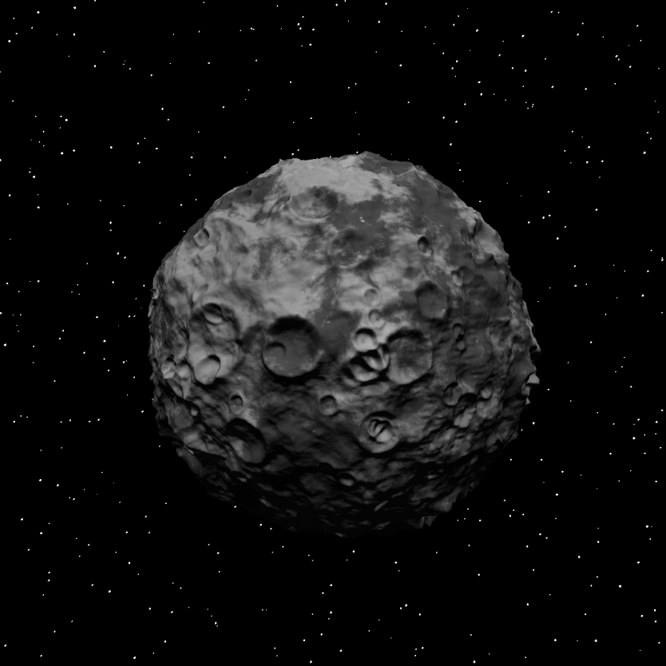
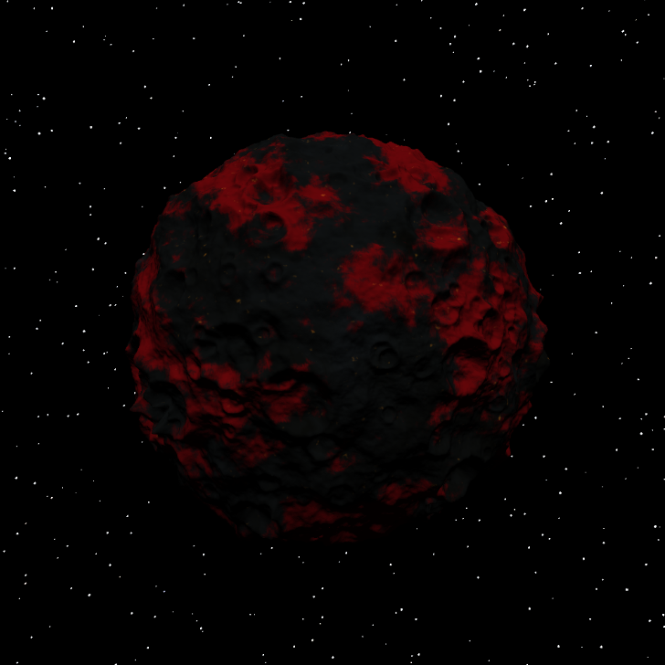
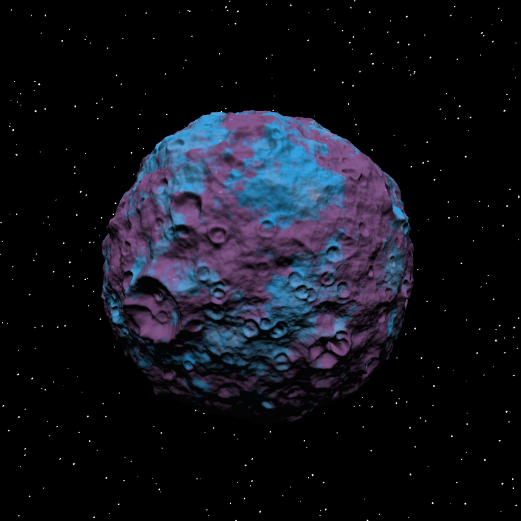
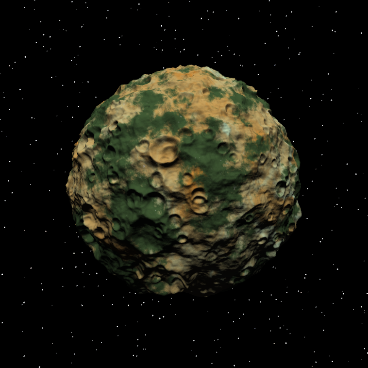

J'ai fait toutes les couleurs de la lune en utilisant un shader.
J'ai utilisé un perlin noise que j'ai converti en fractale noise pour avoir 2 couleurs différentes sur la lune.
J'ai aussi fait en sorte que l'une des couleurs soit aussi un fractale noise avec de la distorsion pour avoir un mix de couleurs.



